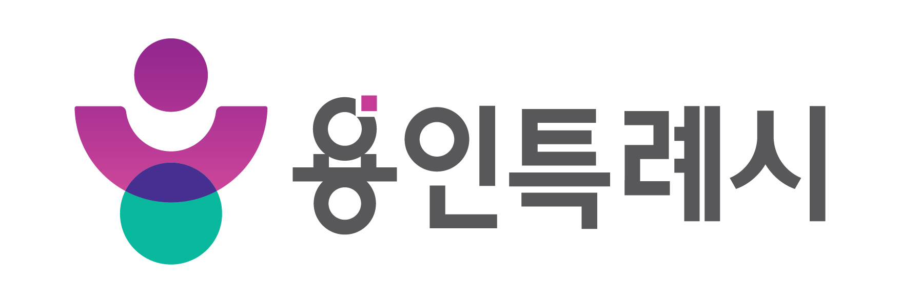
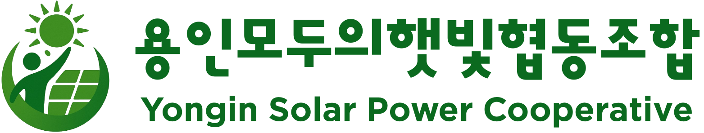
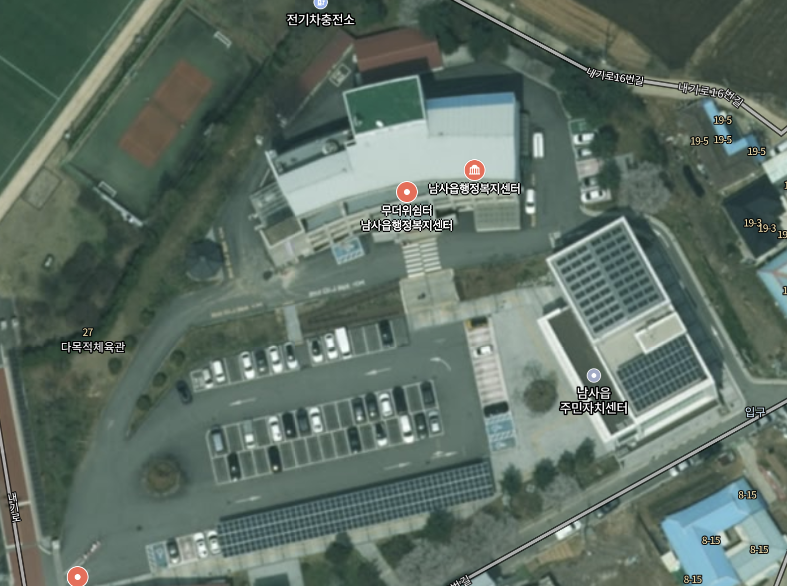

남사읍행정복지센터 주차장 햇빛발전소 조성 제안서
대상지 · 경기 용인시 처인구 남사읍 내기로 22
남사읍행정복지센터 주차장은 주민이 매일 이용하는 생활공간이자, 햇빛으로 전력을 생산할 수 있는 공공자산입니다.
여름철 주차장을 찾은 주민들은 뜨거운 햇살을 피해 그늘진 자리부터 찾습니다. 태양광 차양은 폭염·비·눈을 막아주는 주민 편의시설이 됩니다.
이동·남사읍 반도체 국가산단과 함께 전력 기반의 중요성도 커집니다. 한 곳의 발전소가 모든 수요를 해결할 수는 없지만, 공공부지부터 분산형 재생에너지를 넓혀야 합니다.
신재생에너지법에 따른 공영주차장 설치 의무를 최소 용량을 채우는 데 그치지 않고, 주민복지와 지역환원까지 만드는 공공투자로 전환할 수 있습니다.
근거: 용인시 반도체 국가산단 추진자료 · 용인시 반도체 클러스터 전력 인프라 자료 · 국가법령정보센터 신재생에너지법

남사읍행정복지센터
경기 용인시 처인구 남사읍 내기로 22
의무용량 119kW를 채울 수 있습니다.
법정 기준만 놓고 보면 노출 주차면 일부에 신규 설비를 설치하는 안으로도 대응할 수 있습니다.
추가 62kW는 법이 요구하는 남은 숫자입니다. 어느 주차면을 얼마나 덮을지는 남사 주민이 체감할 편익을 기준으로 한 번 더 판단할 필요가 있습니다.
용량 현황: 전체 의무 119kW · 기존 설치 57kW · 추가 의무 62kW(제공받은 현황 기준). 관계 부서의 설비 인정·용량 확인 후 최종 확정합니다.
여름철 직사광선을 줄여 주차 환경을 개선합니다.
비·눈이 오는 날의 승하차와 이동을 돕습니다.
같은 구조물로 더 많은 지역 재생에너지를 만듭니다.
조명·충전·안내설비의 향후 연계를 준비합니다.
| 검토 항목 | 의무 이행안 · 추가 62kW | 주민복지 확대안 · 추가 약 100~120kW 내외 |
|---|---|---|
| 설계 목표 | 법정 최소용량 충족 | 주차면의 실질적 차양과 발전 확대 |
| 주민 체감 | 일부 주차면에서만 체감 | 그늘·비가림 편익을 넓고 고르게 제공 |
| 경관·동선 | 부분 구조물로 단절될 수 있음 | 열·기둥·배수·조명을 한 번에 정리 |
| 사업성 | 초기 사업비는 상대적으로 작음 | 발전량과 공공 편익이 커지고 증설 중복비용 감소 |
| 확정 조건 | 현장 실측 · 기존 설비 인정 · 지하시설물 · 구조안전 · 계통연계 · 사업비 비교 | |
처음부터 62kW로 한정하지 말고, 62kW안과 전면 차양형을 같은 기본설계에서 비교한 뒤 주민편익·사업비·계통 여건을 보고 확정합니다.
단순 발전량뿐 아니라 그늘 면수, 우천 동선, 주민 이용시간, 경관, 유지관리 편의까지 비교합니다. 사업비와 금융은 조합이 판단합니다.
공공부지 사용, 행정 절차, 주민 편익 기준 협의
사업비 조달, 사업 관리, 시민 참여와 정보 공개
설계·시공·검사·안전·유지관리 품질 확보
설명회·의견 제시·조합원 가입과 출자로 참여
조합에는 남사와 용인 지역 주민들이 조합원으로 많이 참여하고 있습니다. 지역의 질문과 우려를 가까이에서 듣고 답할 수 있어 주민을 설득하고 사업의 주민수용성을 높이는 데 강점이 있습니다. 설명회에서는 조합원과 실무자가 함께 사업 내용을 설명하고 의견을 반영하겠습니다.
지역 주민을 배제하지 않고 조합 정관과 가입 절차에 따라 조합원 가입과 출자 참여의 기회를 열어 둡니다. 사업에서 수익이 발생하고 총회가 배당을 의결하면 출자배당 등 협동조합의 성과를 함께 나눌 수 있습니다.
지역환원은 조합이 임의로 정해 집행하지 않고, 주민이 참여하는 ‘남사 햇빛상생협의체’(가칭)를 구성해 필요한 곳을 함께 정하는 방식으로 제안합니다.
결산을 통해 발전소 연간 매출과 운영비를 투명하게 확인합니다.
사전에 합의한 기준에 따라 매출의 일부를 지역환원 재원으로 구분합니다.
남사 주민·조합·행정 관계자의 참여 범위를 협의해 사업을 선정합니다.
주민 체감사업에 사용하고 금액·용도·성과를 매년 공개합니다.
폭염·한파 대응, 취약계층 에너지 지원, 주민 편의시설 개선
환원 비율과 산정 기준은 사업수지 검토와 협약 과정에서 명문화합니다.
회의 결과, 선정 사유, 집행액과 잔액을 주민이 확인할 수 있게 합니다.
주민이 직접 출자하고, 시민사회·협동조합·지역단체가 함께 운영 기반을 만드는 용인의 시민발전 협동조합입니다.
용인 주민과 지역 조직이 조합원으로 참여
조합 출자원장 기준
개인 242명과 단체 조합원 15곳이 함께합니다.
도내 시민발전협동조합과 사업 정보, 기술·운영 경험, 공동 대응 체계를 나눕니다.
별도 특수목적법인(SPC)을 구성해 경기도 시민발전 협동조합들과 발전사업에 공동 참여하고 있습니다.
조직 현황 기준일: 2026.09.03 · 조합원·출자 원장 집계. 협의회 참여 및 화성시 고속도로 사면 태양광 SPC 공동 참여 내용은 조합 내부 확인사항을 반영했습니다.
남사읍에서 LED 조명과 태양광발전장치 제조기업을 운영해 온 현장 경험을 사업에 연결합니다.
느티나무재단 사무국장
지역사회 전환·임팩트금융 사업 경험
(주)샤인위드컴페니언 대표
공정무역 커피·사회적기업 운영 경험
협동조합 품 이사장
협동조합·자원순환 실천 경험
용인시협동조합협의회장
지역 협동조합 연대·네트워크 경험
지곡초 운영위원장 · 해와달작은도서관 초대관장
교육·지역문화 현장 활동 경험
용인시사회적경제협의회장
사회적경제·민관협력 경험
공개 확인: 에이스엘이디 · 샤인위드컴페니언 · 느티나무재단 임팩트금융 활동 · 용인시의회 자원순환 간담회. 이사 명단과 그 밖의 경력은 2026.09.03 조합 임원 원장 및 보유자료 기준입니다.
풍하중·적설하중·기초·부식 방지를 검토하고 구조기술 확인을 거칩니다.
기둥 위치, 회전반경, 소방차·청소차·장애인 주차 동선을 먼저 확보합니다.
패널 사이 빗물, 홈통, 결빙, 보행구간 낙수까지 한 묶음으로 설계합니다.
접지·차단·표지·케이블 보호와 사용전검사를 통해 감전·화재 위험을 관리합니다.
청사와 기존 설비에 어울리는 색상·높이·야간조명을 적용합니다.
인버터 접근, 세척, 배수 점검, 부품 교체가 쉬운 통로를 확보합니다.
전체 119kW에서 기존 57kW를 뺀 잔여량
남은 주차열을 넓게 덮는 신규 설비 검토 범위
100~120kW × 일평균 3.6시간 기준 단순 추정
| 확정 전 확인 | 확인 이유 | 결과에 따른 조정 |
|---|---|---|
| 세 주차열 실측 | 실제 차양 가능한 폭과 길이를 확인해야 함 | 패널 배열·전면 차양 용량 확정 |
| 기존 57kW 자료 | 계량·소유·연계 방식을 신규 설비와 정리해야 함 | 신·구 설비 운영 책임 구분 |
| 한전 계통 | 접속 가능 용량·보강비가 사업성에 영향 | 용량·계량·일정 조정 |
| 기본설계·견적 | 카포트 기초와 강재 물량의 영향이 큼 | 62kW안과 확대안의 총비용·편익 비교 |
| 예상 사업비 | 1억 1,160만원 |
| 연간 발전량 | 81,468kWh |
| 연간 매출 | 약 1,385만원 |
| 지역환원 · 매출 5% | 약 69만원/년 |
| 운영·수선충당 | 약 223만원/년 |
| 연간 잔여 현금 | 약 1,093만원 |
| 단순 회수기간 | 약 10.2년 |
| 20년 단순 잔여 | 약 0.95억원 |
| 예상 사업비 | 2억 1,600만원 |
| 연간 발전량 | 157,680kWh |
| 연간 매출 | 약 2,681만원 |
| 지역환원 · 매출 5% | 약 134만원/년 |
| 운영·수선충당 | 약 432만원/년 |
| 연간 잔여 현금 | 약 2,115만원 |
| 단순 회수기간 | 약 10.2년 |
| 20년 단순 잔여 | 약 1.83억원 |
참고 · 전력거래소 2026년 월별 SMP·REC 거래자료, 한국에너지공단 RPS 경제성분석 안내. 사업비·판매단가는 제안 검토를 위한 보수적 가정입니다.
남사읍에 기반을 둔 지역 협동조합의 제안이라는 장점을 살려, 본 사업을 시민참여형 에너지전환 사업으로 인정하고 공공부지 대부 또는 사용허가의 수의계약 적용 가능성을 우선 검토해 주시길 제안합니다.
신재생에너지법 제26조제1항은 국가·지방자치단체가 신재생에너지 사업을 위해 필요하다고 인정하면 국유·공유재산을 수의계약으로 임대 또는 처분할 수 있도록 합니다.
「용인시 시민참여형 에너지전환 지원 조례」 제9조제2항은 협동조합 등이 시민참여형 사업을 추진할 때 시 소유 공공부지를 수의계약으로 대부 또는 사용허가할 수 있도록 명시합니다.
근거: 신재생에너지법 제26조제1항, 「용인시 시민참여형 에너지전환 지원 조례」 제6조·제9조(시행 2025.11.06).
계약 직후 현장조사와 계통·인허가 협의를 함께 시작해, 준비가 끝나는 즉시 공사로 이어지도록 관리합니다.
자료 인수, 현장 실측, 지하시설물·차량 동선 확인
한전 계통, 부지 사용, 구조·전기·개발행위 협의와 실시설계
인허가·계통 조건 확정 후 자재 제작·발주 및 착공
기초·철골·모듈·전기 공사와 현장 안전관리
사용전검사, 계통연계, 시운전과 상업운전 개시
용인 관내 업체와의 협업을 우선 검토하고, 공정·기술 요건에 따라 안산 지역 시민발전·전문 시공 파트너와 함께 수행할 준비가 되어 있습니다.
한전 계통보강이나 공공부지·인허가 협의가 길어지면 전체 일정은 9~12개월까지 조정될 수 있으며, 지연 사유와 변경 일정을 즉시 공유합니다.
주민은 산책 중 시설 파손·오염·위험요소를 사진과 위치로 알리고, 전기설비 점검과 보수는 전문 인력이 맡습니다.
지역을 가장 가까이 아는 협동조합이 경기도 시민발전 협력망과 함께 안전하고 투명한 장기 운영을 준비하겠습니다.
조합 홈페이지 · www.yonginsolar.kr